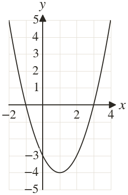
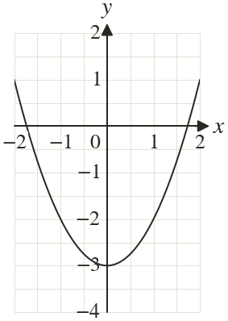

Westonbirt Maths · Quadratics and Their Graphs
Roots from a Quadratic Graph
Name: ______________________ Date: ____________
1
The graph of is drawn. Use it to solve

2
The graph of is drawn. Use it to solve to d.p.

3
The lowest point of the graph of is How many solutions does have?
4
Ella says the solution of is where its graph crosses the y-axis. What is her mistake? Give the solutions.
5
A graph gives a root of as
Why is that not exact?
Why is that not exact?
Ext
crosses the x-axis at and
Find and
Find and